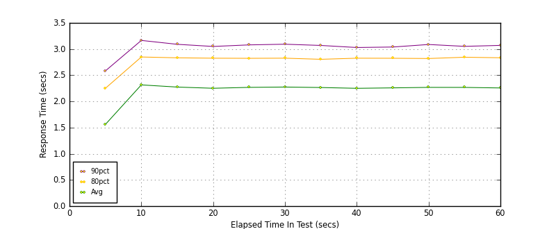
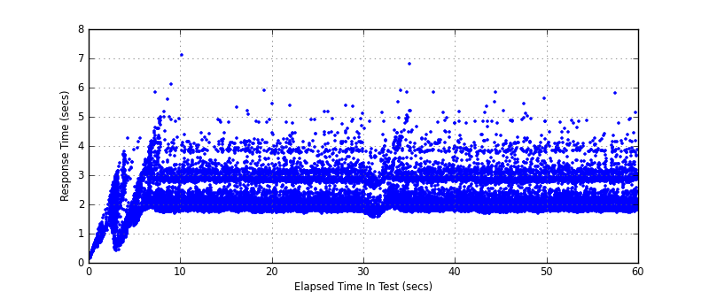

Performance Results Report
Summary
transactions: 26907
errors: 0
run time: 60 secs
rampup: 0 secs
test start: 2017-05-24 17:41:33
test finish: 2017-05-24 17:42:33
time-series interval: 5 secs
workload configuration:
| group name | threads | script name |
|---|
| user_group-21 | 40 | redis_stress.py |
| user_group-20 | 40 | redis_stress.py |
| user_group-23 | 40 | redis_stress.py |
| user_group-22 | 40 | redis_stress.py |
| user_group-25 | 40 | redis_stress.py |
| user_group-24 | 40 | redis_stress.py |
| user_group-2 | 40 | redis_stress.py |
| user_group-3 | 40 | redis_stress.py |
| user_group-1 | 40 | redis_stress.py |
| user_group-6 | 40 | redis_stress.py |
| user_group-7 | 40 | redis_stress.py |
| user_group-4 | 40 | redis_stress.py |
| user_group-5 | 40 | redis_stress.py |
| user_group-8 | 40 | redis_stress.py |
| user_group-9 | 40 | redis_stress.py |
| user_group-10 | 40 | redis_stress.py |
| user_group-11 | 40 | redis_stress.py |
| user_group-12 | 40 | redis_stress.py |
| user_group-13 | 40 | redis_stress.py |
| user_group-14 | 40 | redis_stress.py |
| user_group-15 | 40 | redis_stress.py |
| user_group-16 | 40 | redis_stress.py |
| user_group-17 | 40 | redis_stress.py |
| user_group-18 | 40 | redis_stress.py |
| user_group-19 | 40 | redis_stress.py |
All Transactions
Transaction Response Summary (secs)
| count | min | avg | 80pct | 90pct | 95pct | max | stdev |
|---|
| 26907 | 0.151 | 2.221 | 2.817 | 3.060 | 3.334 | 7.101 | 0.624 |
Interval Details (secs)
| interval | count | rate | min | avg | 80pct | 90pct | 95pct | max | stdev |
|---|
| 1 | 1736 | 347.20 | 0.151 | 1.561 | 2.251 | 2.583 | 2.859 | 4.271 | 0.745 |
| 2 | 2185 | 437.00 | 1.305 | 2.316 | 2.849 | 3.165 | 3.642 | 6.121 | 0.637 |
| 3 | 2193 | 438.60 | 1.703 | 2.274 | 2.833 | 3.091 | 3.325 | 7.101 | 0.560 |
| 4 | 2226 | 445.20 | 1.710 | 2.251 | 2.826 | 3.050 | 3.256 | 5.885 | 0.574 |
| 5 | 2193 | 438.60 | 1.696 | 2.268 | 2.823 | 3.080 | 3.342 | 5.389 | 0.570 |
| 6 | 2245 | 449.00 | 1.685 | 2.275 | 2.826 | 3.093 | 3.387 | 5.370 | 0.594 |
| 7 | 2183 | 436.60 | 1.549 | 2.266 | 2.805 | 3.069 | 3.562 | 6.794 | 0.650 |
| 8 | 2198 | 439.60 | 1.719 | 2.250 | 2.826 | 3.030 | 3.257 | 5.846 | 0.561 |
| 9 | 2219 | 443.80 | 1.673 | 2.259 | 2.824 | 3.039 | 3.267 | 5.830 | 0.575 |
| 10 | 2206 | 441.20 | 1.690 | 2.268 | 2.820 | 3.087 | 3.431 | 5.614 | 0.595 |
| 11 | 2205 | 441.00 | 1.716 | 2.268 | 2.844 | 3.052 | 3.225 | 4.878 | 0.555 |
| 12 | 2117 | 423.40 | 1.716 | 2.257 | 2.834 | 3.070 | 3.323 | 5.812 | 0.563 |
Graphs
Response Time: 5 sec time-series

Response Time: raw data (all points)

Throughput: 5 sec time-series